CH13-002 — images
【夫婦】我慢が続くほど壊れる｜会話の線引き
ep
CH13
Script Viewer
snapshot
guide
台本
音声
サムネ
画像
CH13-002
画像
updated_at: 2026-01-13T11:01:50.708525Z
run_id:
CH13-002_redo3_schnell_20260102_101917
CH13-002
心に溜まる未払い請求書
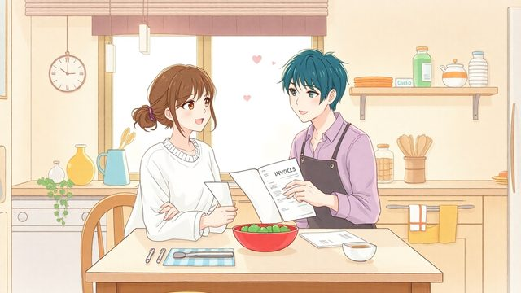
CH13-002
我慢を外に出して眺める
CH13-002
我慢が増えると心が敏感に
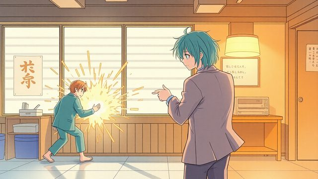
CH13-002
我慢の限界: 爆発か無関心
CH13-002
限界近いサインを認識
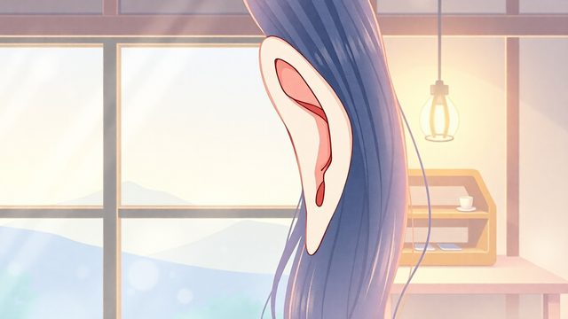
CH13-002
心の声に耳を傾ける
CH13-002
我慢は優しさのふりをして傷つける
CH13-002
息苦しい家のすれ違い
CH13-002
線引きは道幅を決める
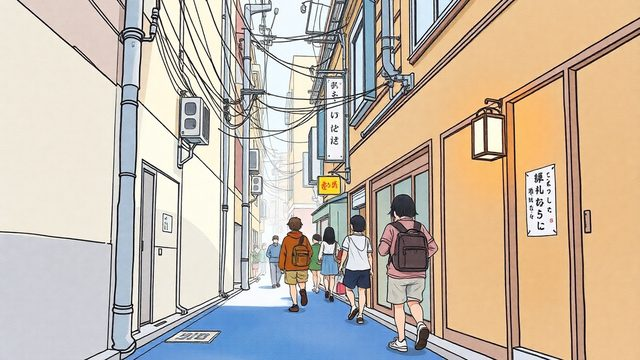
CH13-002
路地を広げて安心
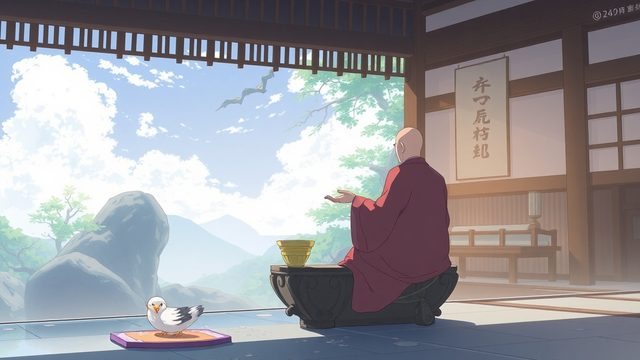
CH13-002
線引きは勝ち負けではない
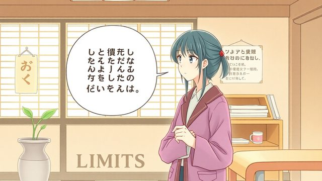
CH13-002
評価ではなく自分の範囲を示す
CH13-002
自分の可否を語る重要性
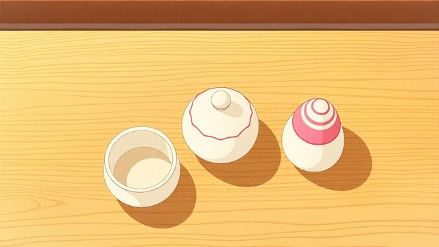
CH13-002
ブッダの教え: 真実で優しい言葉
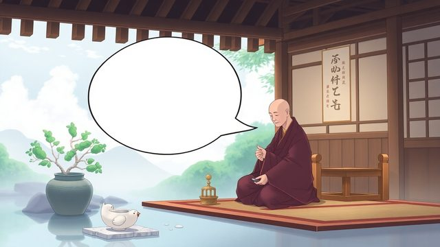
CH13-002
淡々と示すと角が立たない
CH13-002
境界の曖昧さと摩耗
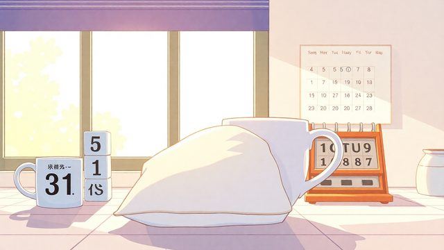
CH13-002
クッション境界を言葉に
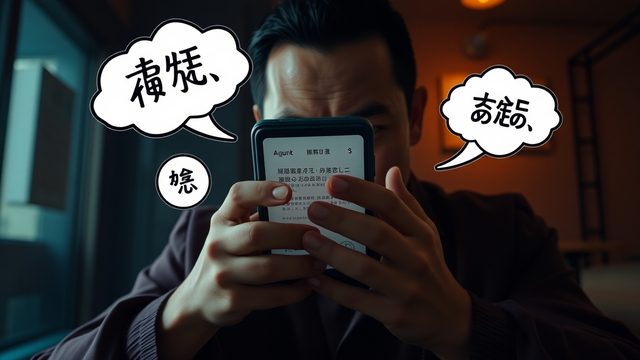
CH13-002
通知で心が走り出す
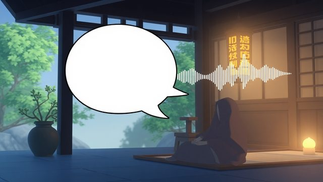
CH13-002
出来事と反射を分ける
CH13-002
反射が騒ぎを膨らます
CH13-002
反射は自然だが返し方に注意
CH13-002
期待が反射を燃やす
CH13-002
反射と期待の握りを緩める
CH13-002
返信前の深呼吸と身体チェック
CH13-002
距離を作り落ち着いて返す
CH13-002
譲らない一点を決める
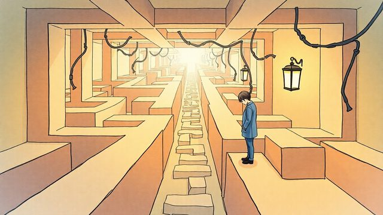
CH13-002
一点に絞ると会話が迷わない
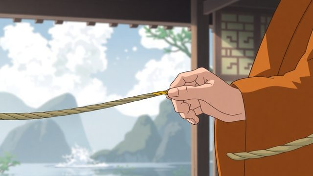
CH13-002
一点を決めて短く言う
CH13-002
侮辱は受け取らず線引き
CH13-002
繰り返しの一点と迷いの減少
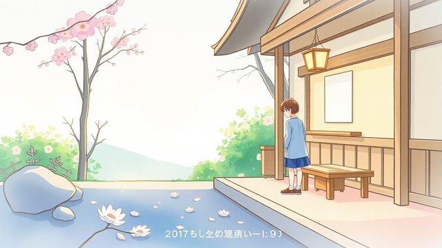
CH13-002
小さな点が道幅になる／線を守ると罪悪感が出る
CH13-002
不機嫌でも線は自分との約束
CH13-002
断った後の反射が苦しみを増やす
CH13-002
線引きは自分との約束
CH13-002
罪悪感を揺れとして扱う
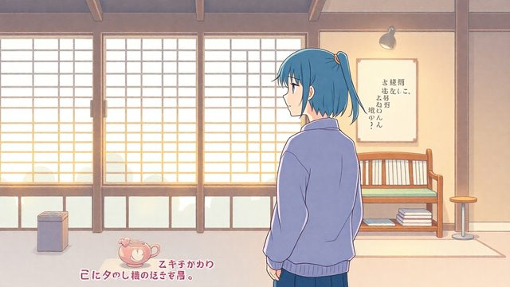
CH13-002
距離の取り方を選ぶ
CH13-002
断れない問題と一言の準備
CH13-002
反射と期待による消耗
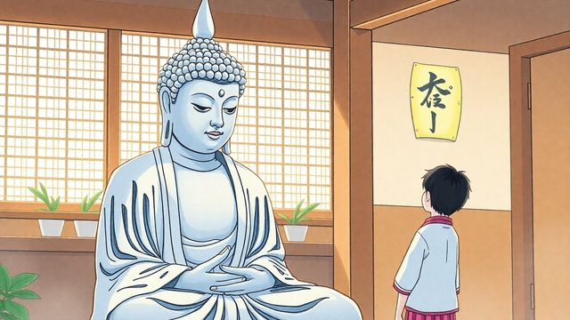
CH13-002
事実から入るコミュニケーション
CH13-002
頼みを断る短い一言
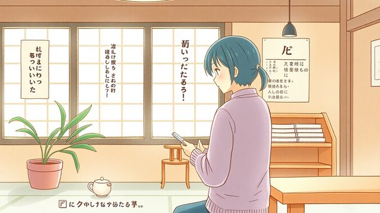
CH13-002
できる範囲を淡々と伝える
CH13-002
嫌味への静かな区切り
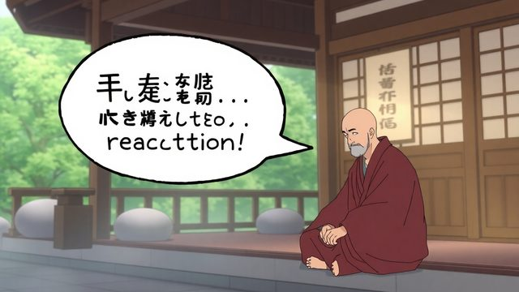
CH13-002
短い言葉が反射を遅らせる
CH13-002
朝の整え方で一日を準備
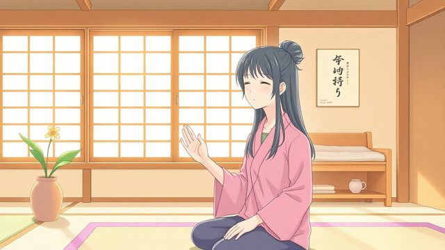
CH13-002
朝の呼吸と一点の確認
CH13-002
小さな約束を朝に決める
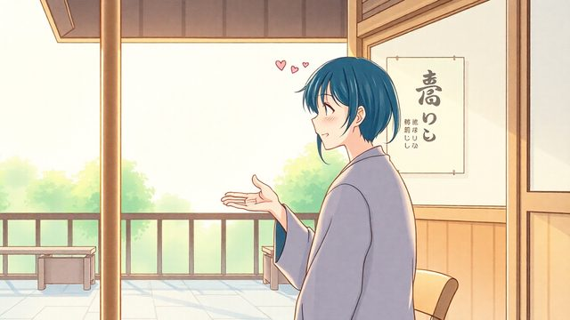
CH13-002
昼に一点を言葉で形にする／夜の反省を約束視点へ
CH13-002
一歩を認め失敗をほどく
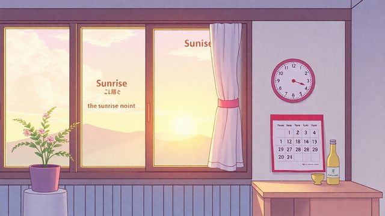
CH13-002
朝夜の習慣で線引き日常化
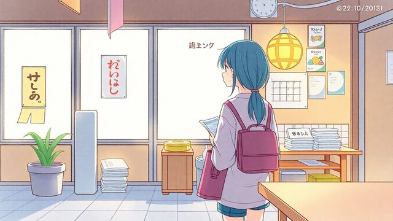
CH13-002
我慢を未払いとして眺める
CH13-002
線引きで関係を守る
CH13-002
今日からできる一歩: 呼吸
CH13-002
繰り返しが安心をもたらす